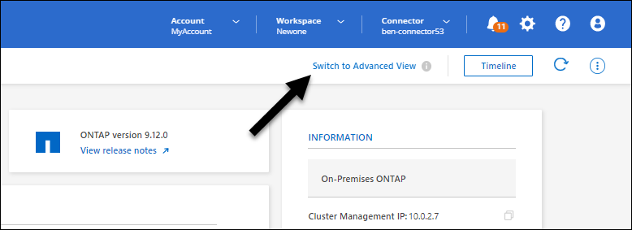
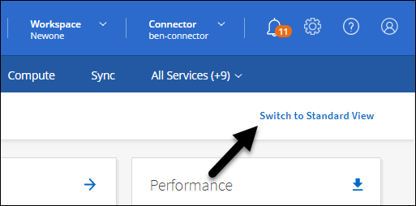

Solicitar cambios en el documento
Solicitar cambios en el documento Editar en GitHub
Editar en GitHub Guía del colaborador
Guía del colaboradorGestione clústeres de ONTAP en las instalaciones que se detectaron con un conector
Colaboradores
Si detectó un clúster de ONTAP en las instalaciones mediante un conector, puede crear volúmenes desde la vista estándar, use System Manager desde la vista avanzada y habilite los servicios de datos de BlueXP.
Cree volúmenes desde la vista estándar
Después de descubrir su clúster de ONTAP en las instalaciones desde BlueXP mediante un conector, puede abrir el entorno de trabajo para aprovisionar y gestionar el almacenamiento.
Cree volúmenes
BlueXP le permite crear volúmenes NFS o CIFS en agregados existentes. No se pueden crear nuevos agregados en un clúster de ONTAP en las instalaciones desde la vista estándar de BlueXP. Debe usar la vista Advanced para crear agregados.
Una función de BlueXP denominada "plantillas" permite crear volúmenes optimizados para los requisitos de carga de trabajo de determinadas aplicaciones, como bases de datos o servicios de streaming. Si su organización ha creado plantillas de volumen que debe utilizar, siga estos pasos.
-
En el menú de navegación, selecciona almacenamiento > Canvas.
-
En la página lienzo, haga doble clic en el nombre del clúster ONTAP en las instalaciones en el que desea aprovisionar volúmenes.
-
Haga clic en volúmenes > Añadir volumen.
-
Siga los pasos del asistente para crear el volumen.
-
Detalles, Protección y Etiquetas: Introduzca detalles sobre el volumen como su nombre y tamaño, elija una política de instantánea y especifique etiquetas de volumen, si lo desea.
Algunos de los campos en esta página son claros y explicativos. En la siguiente lista, se describen los campos que podrían presentar dificultades:
Campo Descripción Tamaño
El tamaño máximo que puede introducir depende en gran medida de si habilita thin provisioning, lo que le permite crear un volumen que sea mayor que el almacenamiento físico que hay disponible actualmente.
Política de Snapshot
Una política de copia de Snapshot especifica la frecuencia y el número de copias de Snapshot de NetApp creadas automáticamente. Una copia snapshot de NetApp es una imagen del sistema de archivos puntual que no afecta al rendimiento y requiere un almacenamiento mínimo. Puede elegir la directiva predeterminada o ninguna. Es posible que no elija ninguno para los datos transitorios: Por ejemplo, tempdb para Microsoft SQL Server.
-
Protocolo: Elija el protocolo para el volumen (NFS, CIFS o iSCSI) y, a continuación, establezca el control de acceso o los permisos para el volumen.
Si elige CIFS y aún no hay ningún servidor configurado, BlueXP le solicita que configure un servidor CIFS con Active Directory o un grupo de trabajo.
En la siguiente lista, se describen los campos que podrían presentar dificultades:
Campo Descripción Control de accesos
Una política de exportación de NFS define los clientes de la subred que pueden acceder al volumen. De forma predeterminada, BlueXP introduce un valor que proporciona acceso a todas las instancias de la subred.
Permisos y usuarios/grupos
Estos campos permiten controlar el nivel de acceso a un recurso compartido de SMB para usuarios y grupos (también llamados listas de control de acceso o ACL). Es posible especificar usuarios o grupos de Windows locales o de dominio, o usuarios o grupos de UNIX. Si especifica un nombre de usuario de Windows de dominio, debe incluir el dominio del usuario con el formato domain\username.
-
Perfil de uso: Elija si desea activar o desactivar las funciones de eficiencia del almacenamiento en el volumen para reducir la cantidad total de almacenamiento que necesita.
-
Revisión: Revise los detalles sobre el volumen y luego haga clic en Agregar.
-
Crear volúmenes a partir de plantillas
Si su organización ha creado plantillas de volúmenes de ONTAP en las instalaciones para poder implementar volúmenes optimizados para los requisitos de cargas de trabajo de determinadas aplicaciones, siga los pasos de esta sección.
La plantilla debería facilitar el trabajo porque ciertos parámetros de volumen ya se definirán en la plantilla, como el tipo de disco, el tamaño, el protocolo, la política de instantáneas, etc. Cuando ya hay un parámetro predefinido, puede saltar al siguiente parámetro de volumen.

|
Solo es posible crear volúmenes NFS o CIFS cuando se utilizan plantillas. |
-
En la página lienzo, haga clic en el nombre del sistema ONTAP en las instalaciones en el que desea aprovisionar un volumen.
-
Haga clic en
 > Añadir volumen de plantilla.
> Añadir volumen de plantilla.
-
En la página Select Template, seleccione la plantilla que desea utilizar para crear el volumen y haga clic en Siguiente.

Aparece la página define Parameters.

Nota: puede hacer clic en la casilla de verificación Mostrar parámetros de sólo lectura para mostrar todos los campos bloqueados por la plantilla si desea ver los valores de esos parámetros. De forma predeterminada, estos campos predefinidos están ocultos y sólo se muestran los campos que debe completar.
-
En el área context, el entorno de trabajo se rellena con el nombre del entorno de trabajo con el que empezó. Debe seleccionar Storage VM y aggregate donde se creará el volumen.
-
Agregue valores para todos los parámetros que no estén codificados de forma rígida desde la plantilla.
-
Haga clic en Ejecutar plantilla después de definir todos los parámetros necesarios para este volumen.
BlueXP aprovisiona el volumen y muestra una página para que pueda ver el progreso.

A continuación, se añade el nuevo volumen al entorno de trabajo.
Además, si se implementa alguna acción secundaria en la plantilla, por ejemplo, habilitar Cloud Backup en el volumen, esa acción también se lleva a cabo.
Si ha aprovisionado un recurso compartido CIFS, proporcione permisos a usuarios o grupos a los archivos y carpetas y compruebe que esos usuarios pueden acceder al recurso compartido y crear un archivo.
Administrar ONTAP mediante la vista avanzada
Si necesita realizar una gestión avanzada de un clúster ONTAP en las instalaciones, puede hacerlo mediante System Manager de ONTAP, que es una interfaz de gestión proporcionada con un sistema ONTAP. Hemos incluido la interfaz de System Manager directamente dentro de BlueXP para que no tenga que salir de BlueXP para una administración avanzada.
Esta vista avanzada está disponible como vista previa. Tenemos pensado perfeccionar esta experiencia y añadir mejoras en próximos lanzamientos. Envíenos sus comentarios mediante el chat en el producto.
Funciones
La vista avanzada de BlueXP le ofrece acceso a funciones de gestión adicionales:
-
Gestión del almacenamiento avanzada
Gestionar grupos de consistencia, recursos compartidos, qtrees, cuotas y máquinas virtuales de almacenamiento.
-
Gestión de redes
Gestione espacios IP, interfaces de red, conjuntos de puertos y puertos ethernet.
-
Eventos y trabajos
Ver registros de eventos, alertas del sistema, trabajos y registros de auditoría
-
Protección de datos avanzada
Proteja las máquinas virtuales de almacenamiento, LUN y grupos de consistencia.
-
Gestión de hosts
Configure los iGroups SAN y los clientes NFS.
Configuraciones admitidas
La gestión avanzada mediante System Manager se admite con clústeres ONTAP en las instalaciones que ejecutan 9.10.0 o versiones posteriores.
La integración de System Manager no es compatible en regiones GovCloud o regiones que no tienen acceso saliente a Internet.
Limitaciones
Algunas funciones de System Manager no son compatibles con clústeres de ONTAP en las instalaciones al usar la vista avanzada en BlueXP.
Usar la vista avanzada (System Manager)
Abra un entorno de trabajo local de ONTAP y haga clic en la opción Vista avanzada.
-
En la página lienzo, haga doble clic en el nombre de un entorno de trabajo ONTAP en las instalaciones.
-
En la parte superior derecha, haga clic en Cambiar a vista avanzada.

-
Si aparece el mensaje de confirmación, léalo y haga clic en Cerrar.
-
Utilice System Manager para gestionar ONTAP.
-
Si es necesario, haga clic en Cambiar a vista estándar para volver a la administración estándar a través de BlueXP.

Obtenga ayuda con System Manager
Si necesita ayuda para el uso de System Manager con ONTAP, puede consultar "Documentación de ONTAP" para obtener instrucciones paso a paso. A continuación encontrará algunos enlaces que pueden ayudarle:
Active los servicios de datos de BlueXP
Active los servicios de datos de BlueXP en sus entornos de trabajo para replicar, realizar copias de seguridad, analizar y organizar los datos por niveles.
Replicar datos
Puede replicar datos entre sistemas Cloud Volumes ONTAP y clústeres ONTAP eligiendo una replicación de datos única, que puede ayudarle a mover datos hacia y desde el cloud, o una programación recurrente, que puede ayudar con la recuperación ante desastres o la retención a largo plazo.
Realice backups de los datos
Puede realizar backups de datos de su sistema ONTAP en las instalaciones en un almacenamiento de objetos de bajo coste en el cloud por medio de Cloud Backup. Este servicio proporciona funcionalidades de backup y restauración para protección y archivado a largo plazo de sus datos en las instalaciones y en el cloud.
Analice, asigne y clasifique sus datos
Cloud Data Sense puede analizar sus clústeres locales corporativos para asignar y clasificar datos e identificar información privada. Esto puede ayudarle a reducir los riesgos de seguridad y de cumplimiento de normativas, a reducir los costes de almacenamiento y a facilitar los proyectos de migración de datos.
Organice los datos en niveles en el cloud
Amplíe su centro de datos al cloud organizando en niveles los datos inactivos de los clústeres de ONTAP en el almacenamiento de objetos mediante Cloud Tiering.